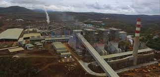

Ekonomi
Ekonomi Maluku Utara tahun 2022 tumbuh sebesar 22,94 persen, lebih tinggi dibanding capaian tahun 2021 yang mengalami pertumbuhan sebesar 16,79 persen. Dari sisi produksi, Lapangan Usaha Industri Pengolahan mengalami pertumbuhan tertinggi sebesar 77,27 persen.
Pendapatan ekonomi Maluku Utara berasal dari berbagai sektor ekonomi yang mencakup pertanian, perikanan, industri, pertambangan, pariwisata, perdagangan, dan sektor jasa lainnya. Maluku Utara adalah provinsi di Indonesia yang terdiri dari banyak pulau, sehingga sumber pendapatan ekonominya cukup beragam. Beberapa sektor ekonomi utama di Maluku Utara meliputi:
1.Pertanian:
Pertanian adalah sektor penting di Maluku Utara, dengan produksi berbagai jenis tanaman, seperti padi, jagung, ubi kayu, kelapa, dan buah-buahan. Hasil pertanian ini menjadi sumber pendapatan bagi banyak penduduk di provinsi ini.
-
2.Perikanan:
Maluku Utara memiliki potensi perikanan yang besar karena lokasinya yang berdekatan dengan perairan laut yang kaya akan ikan. Perikanan tradisional dan komersial merupakan sumber pendapatan utama bagi sebagian besar penduduk di daerah ini. -
3.Industri:
Meskipun sektor industri di Maluku Utara tidak sebesar sektor pertanian dan perikanan, masih ada kegiatan industri seperti pengolahan makanan, kerajinan tangan, dan industri kecil lainnya yang berkontribusi pada pendapatan ekonomi provinsi. -
4.Pertambangan:
Pertambangan juga memberikan kontribusi pada pendapatan ekonomi Maluku Utara. Beberapa komoditas tambang yang dieksploitasi di daerah ini termasuk bijih nikel, bijih besi, dan lainnya.
-
5.Pariwisata:
Potensi pariwisata di Maluku Utara cukup besar karena keindahan alam dan kekayaan budaya di provinsi ini. Objek wisata seperti pantai, pulau-pulau eksotis, dan situs sejarah menjadi daya tarik bagi wisatawan, yang berkontribusi pada pendapatan daerah melalui sektor pariwisata. -
6.Perdagangan:
Sebagai bagian dari ekonomi Indonesia, Maluku Utara juga memiliki sektor perdagangan yang penting. Aktivitas perdagangan termasuk ekspor dan impor barang, serta distribusi produk-produk lokal ke pasar nasional dan internasional.